evernote
Giving a legacy brand a makeover for the modern creator
animation
BRAnding
graphics
ux
As part of a branding course, I was tasked with developing or refreshing a brand identity. I chose to reimagine Evernote, the well-known productivity platform, with a more timeless, classic personality—balancing its powerful digital features with a sense of analog charm.
Evernote serves as a flexible companion for storing notes, lists, files, and ideas—designed for those who want creativity and organization to coexist. My goal was to translate that ethos into a visual identity that honors inspiration, structure, and a bit of the beautiful messiness that comes with creative thinking.
The Challenge
Reimagine Evernote’s visual identity and interface so that it feels more timeless and approachable for modern creators.
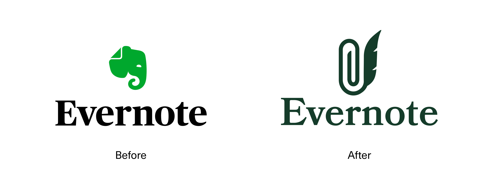
Mark development
From the beginning, I was drawn to the idea of combining two iconic tools:
- A paperclip, symbolizing structure and digital organization
- A quill, representing inspiration, creativity, and the more analog side of writing
The quill isn’t just a writing tool—it’s a symbol of spontaneity, imperfection, and creative flow. I explored a few directions that played with the balance of formality and whimsy, eventually landing on a clean, rounded form that merges the energy of a pen stroke with the quiet utility of a paperclip. The final mark visually mirrors Evernote’s function: structured yet creative, simple yet expressive.
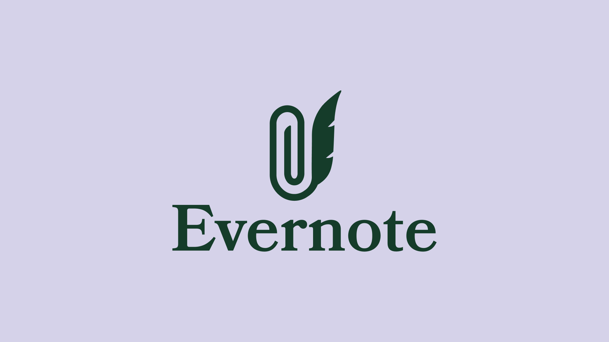
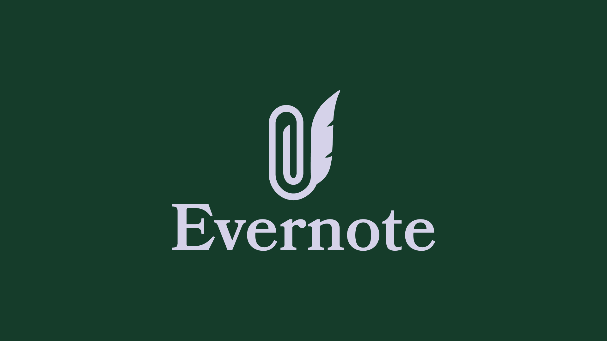
typography
Bookmania was a natural fit. Its name alone nodded to the concept, but its form—rich in curves and expressive terminals—echoed the quill’s motion and complemented the organic structure of the logo. The terminal of the "r" evokes a droplet of ink, the slope of the "E" mirrors the quill's curve, and the "t" provides just enough contrast to balance the rest of the letterforms, much like the mark itself.
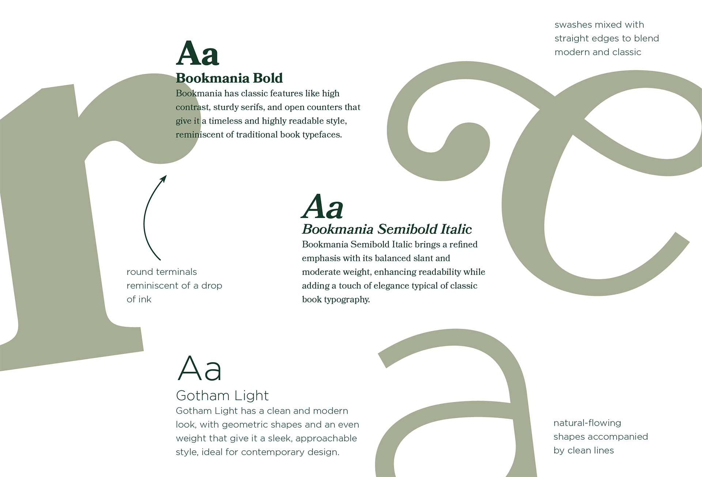
brand colors
I developed a rich yet adaptable color palette that worked across both light and dark interfaces. I paired muted, sophisticated tones with deeper accent shades to keep the brand feeling grounded but never dull. A custom icon set further reinforced the identity, with each icon echoing the curvature and balance of the main mark.
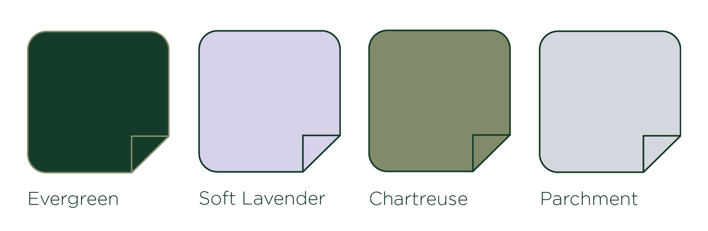
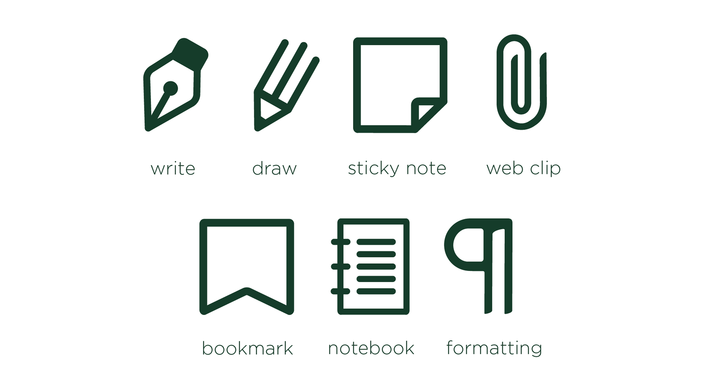
digital design
My favorite part of the project was applying the new branding to digital environments—particularly the Evernote app. I wanted to enhance the analog-inspired feel without sacrificing usability.
Key interface updates included:
- A homepage layout focused on ease of use, with “recent notes,” a scratch pad, and quick-access widgets placed within natural thumb reach
- Custom toolbar icons to reduce the visual clutter often found in note-taking apps
- A calm, spacious web design that supports focus and reflects Evernote’s mission to give users mental clarity
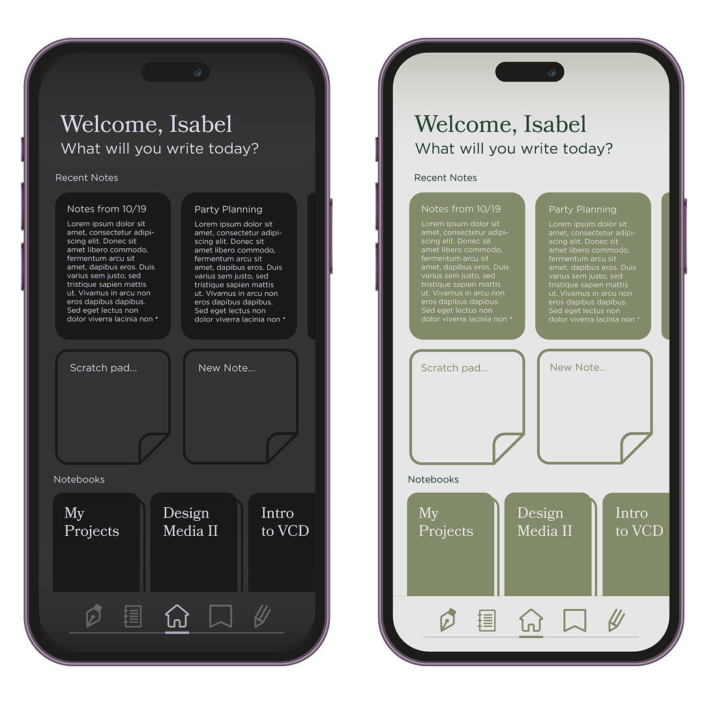
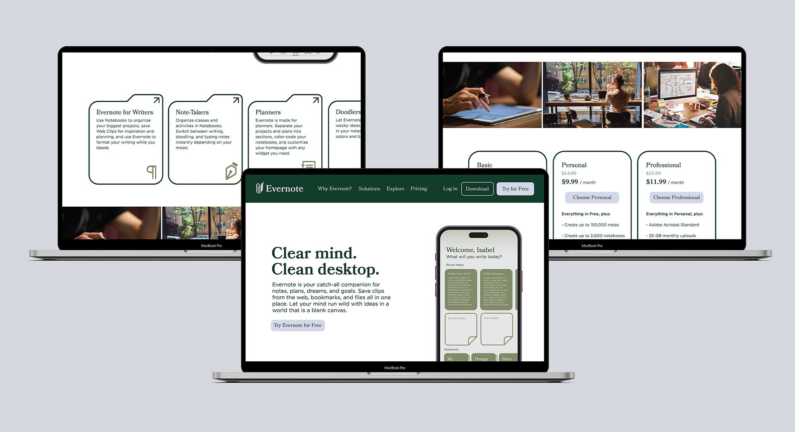
everbook
To push the rebrand further, I created a conceptual product: the EverBook—a smart notebook designed to bridge the analog and digital worlds.
Features include high-quality paper designed for digitization, instant syncing with the Evernote app, and advanced handwriting recognition. It’s ideal for creatives, students, and professionals who want the feel of handwriting without losing digital organization.
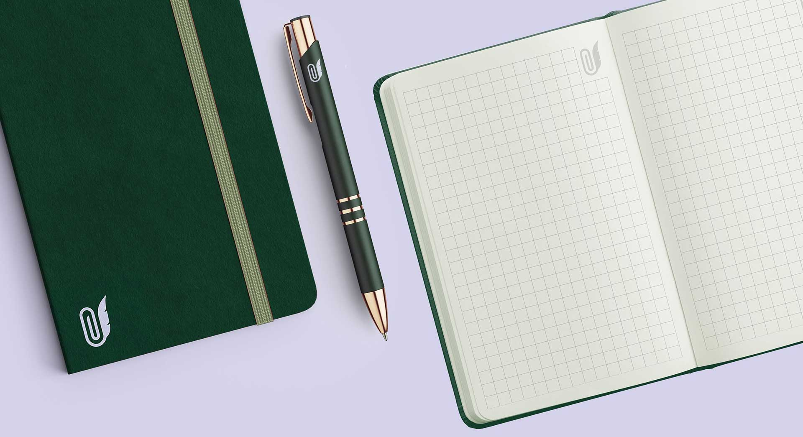
stationery & extensions
To round out the system, I extended the branding to printed materials, incorporating motifs from classic filing systems and vintage office supplies. These grounded the visual language and made the brand feel both nostalgic and forward-thinking.
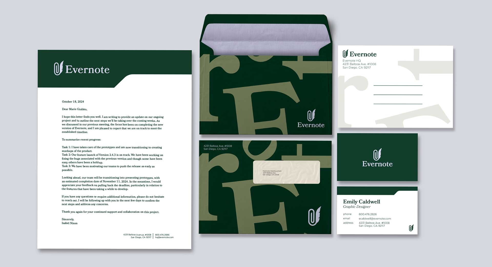
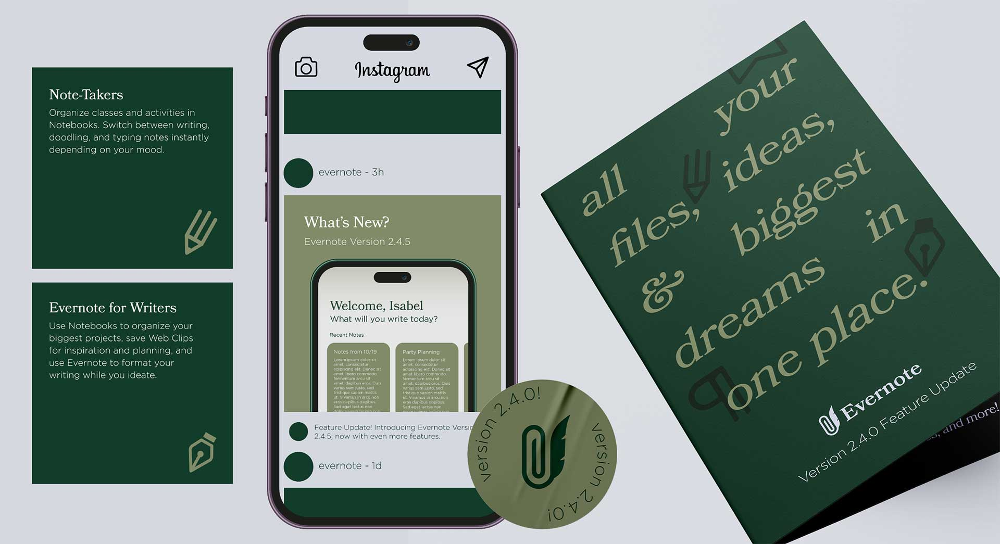
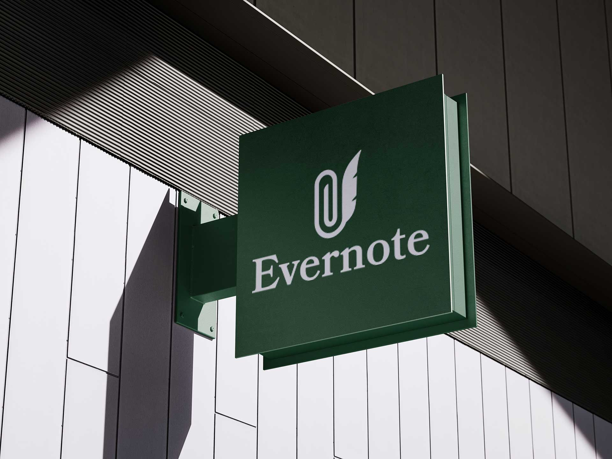
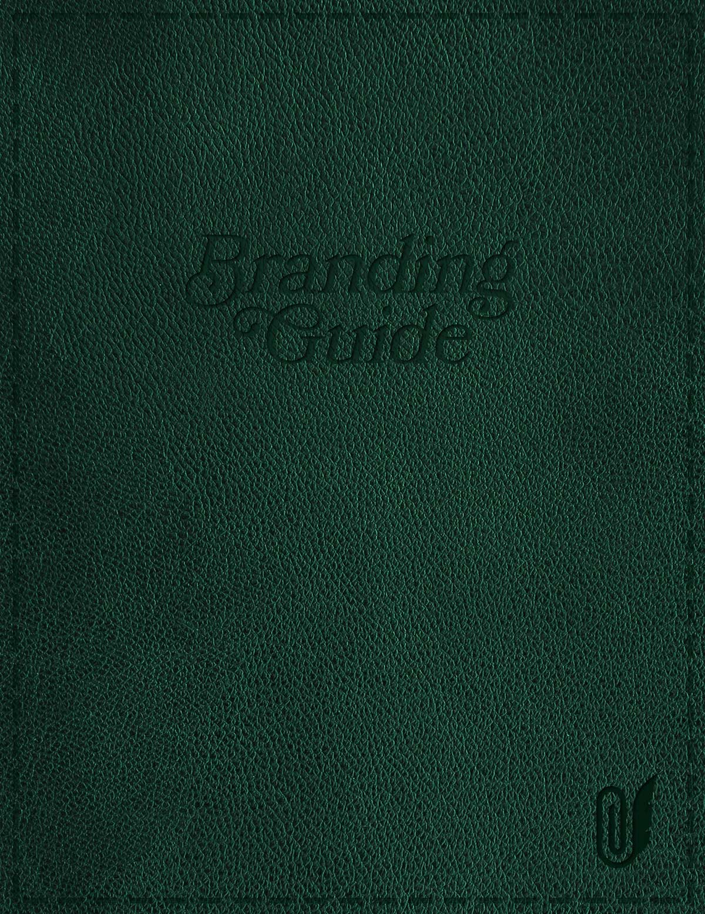
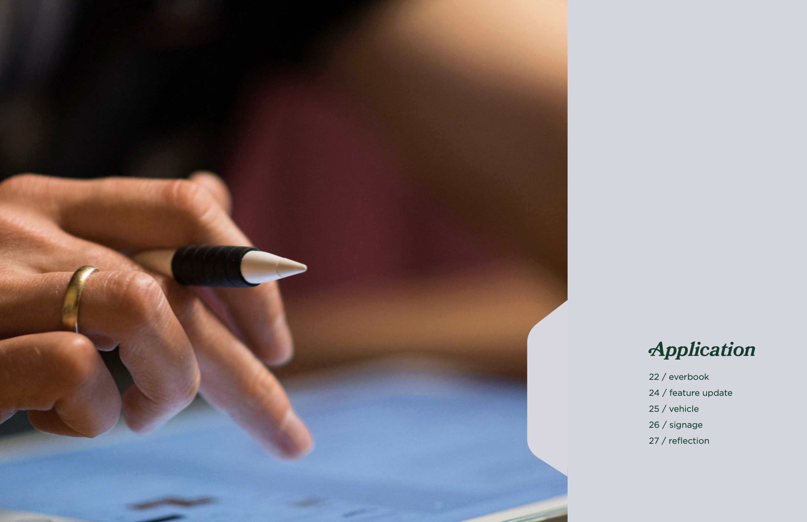
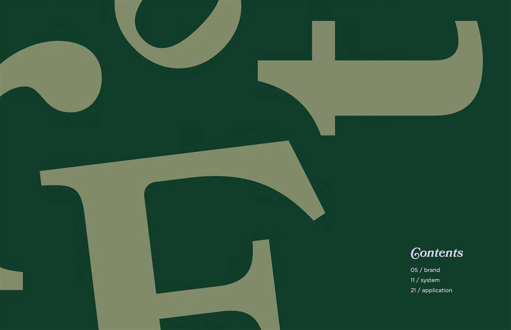